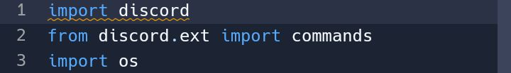
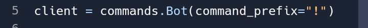
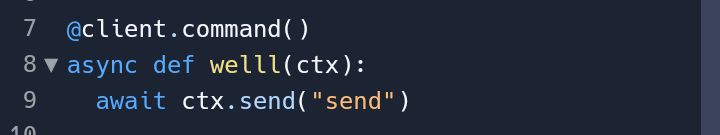
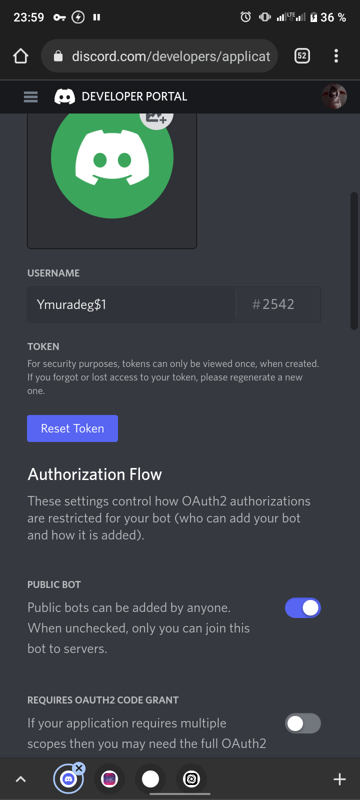
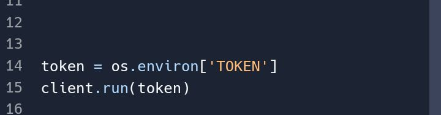
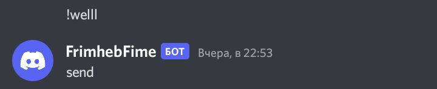

Для начала нам надо зарегистрироваться на сайте replit.com.
После того как мы зарегистрировались на реплите нам нужно создать файл с языком Python. Когда вы создали пишем в самом начале:
Дальше будем писать префикс нашего бота
бот будет определять на что он будет отвечать и кому
Дальше будем писать саму команду и ответ на нее́=
дальше нам нужно зайти на сайт develope portal discord когда мы туда вошли видем синию кнопку new application когда нажали у нас будет name это ник нашего бота придумываем все сами
когда придумали и создали нажимаем в верхнем левом углу на три полоски и нажимаем на bot
когда нажали у вас будет такая кнопка create нажимаем
и потом не много листаем ниже и видем token нажимаем на reset и копируем
Когда скопировали, переходим обратно на реплит и и видем нижнию панель и нажимаем самую правую где написано commands когда видем меню нажимаем на secret и видим меню где key пишем TOKEN а где value вставляем наш токен который мы скопировали и нажимаем add new secret
И возвращаемся где мы все написали и пишем это =
Вот и все нам осталось Пригласить нашего бота на свой сервер заходим обратно в develope portal Снова три полоски нажимаем на 2OAuth когда нажали снова нажимаем на три полоски когда нажали нажимаем на URL generator листаем ниже нажимаем на bot потом еще ниже и нажимаем на administrator и потом еще ниже и там будет наша ссылка копируем и вставляем и приглашаем на свой сервер
Потом возвращаемся снова же на реплит и нажимаем на зелёную кнопку все наш бот заработал и можем писать !well и вот мы получили ответ
В конце вы можете посмотреть как поставить бота на хостинг чтобы он работал 24/7